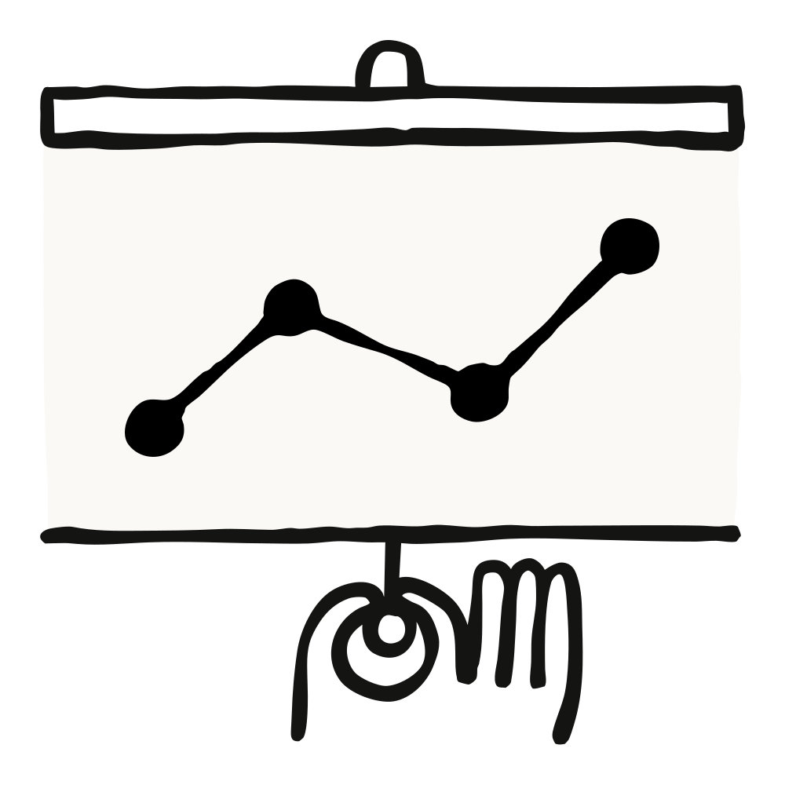
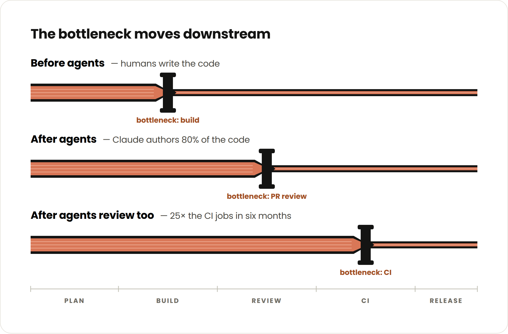
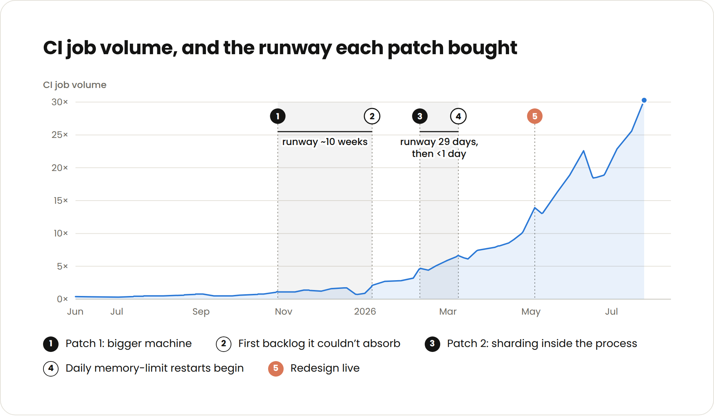
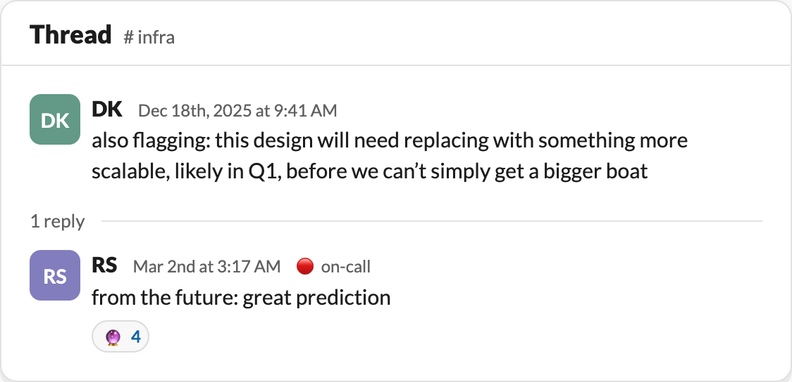
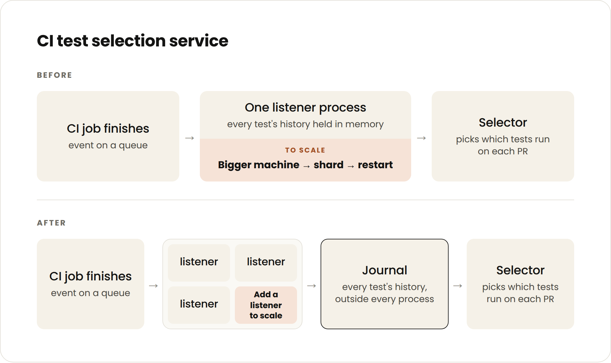
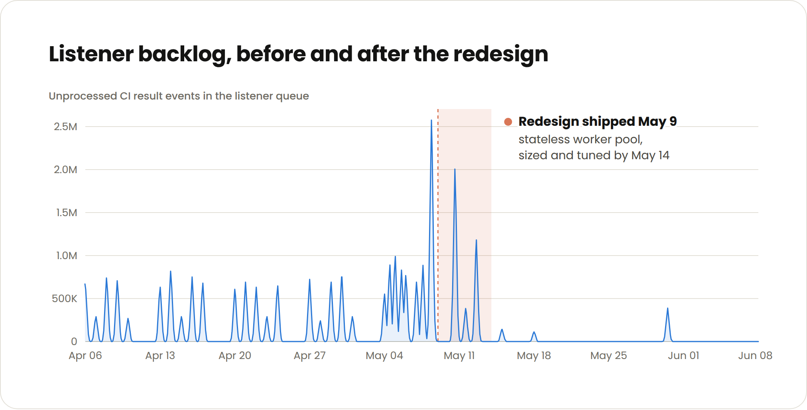

Anthropic 엔지니어들은 평균적으로 2021~2025년에 비해 분기당 8배 많은 코드를 출시한다. 그 코드의 80%는 Claude가 작성하며, Claude는 PR을 리뷰하고 승인하는 일에서도 큰 역할을 맡고 있다.

여기에 더해 우리 코드베이스 전체의 테스트 수는 10배로 늘었고, 엔지니어는 명목상의 인원만 추가됐다. 이 모든 것이 합쳐져 6개월 동안 CI 잡(job)이 25배 증가했다(계산이 안 맞는다고 느낀다면, 뒤에서 설명하겠지만 모든 테스트가 모든 PR에서 실행되는 것은 아니기 때문이다).
이 때문에 우리의 테스트 영향 분석(test impact analysis) 서비스는 여러 차례 과부하 위기에 몰렸다. 다음 병목이 되지 않기 위해 우리는 이 서비스를 통째로 뒤엎고 아키텍처를 처음부터 다시 그렸다. 하지만 거기까지 가는 길은 울퉁불퉁했다. 세 번의 임시 처방으로 시작했는데, 각각 70일, 29일, 그리고 하루도 채 못 버텼다.
에이전트가 코드 생성과 리뷰를 계속 가속하면서, CI 확장은 곧 더 많은 엔지니어링 팀이 마주하게 될 과제다. 에이전트를 돌리는 팀이 더 많은 PR과 더 많은 테스트를 만들어 내면서, 수평 확장되는 테스트 선택(test selection) 아키텍처가 업계 표준이 될 것이라고 본다.

이 글에서는 Anthropic에서 테스트 영향 분석 서비스를 어떻게 확장했는지, 그리고 내가 고생 끝에 배운 교훈, 즉 항상 지수적 성장을 계획하라는 것을 이야기하려 한다. 구체적인 확장 기법들, 그러니까 더 큰 머신을 사거나, 프로세스를 병렬화하거나, 서비스를 재시작하는 것(그렇다, 이건 여전히 놀랄 만큼 잘 먹힌다)은 흔한 방법이며 이 글에서 가져가야 할 통찰이 아니다.
요점은, 이 기법들 하나하나가 벌어 주는 시간이 1년 전의 몇 분의 1에 불과하다는 것이다. 반면 서비스를 뜯어고쳐 완전히 다시 설계하는 일 역시 예전의 몇 분의 1의 시간밖에 걸리지 않으며, 코드 작성이 더 이상 병목이 아닌 지금은 훨씬 더 지속 가능한 선택이다.
이 압박을 미리 내다보고 아키텍처가 그에 맞춰 어떻게 진화할지 계획할수록, 어중간한 조치에 낭비하는 시간은 줄어든다.
내 동료 중 상당수는 여전히 모든 변경마다 모든 테스트를 실행하는 조직에서 일한다. 이 방식은 어느 지점까지는 통하지만 확장되지 않는다. CI 게이트는 점점 길어지고, 비싸지고, 신뢰할 수 없게 된다.
게다가 사람은 어떤 테스트 실패가 자기와 무관한지 잘 가려내지만, 에이전트는 더 많은 맥락과 지시가 필요하다. 에이전트에게 유효한 테스트만 골라서 구체적으로 주면, 스스로 검증하고 반복하는 일을 훨씬 효과적으로 해낸다.
Anthropic에서는 과거 성능과 패키지 연관성을 바탕으로 각 변경에서 어떤 테스트를 실행할지 결정하는 결정론적(deterministic) 테스트 영향 분석, 즉 테스트 선택 서비스를 만들었다. 드문 관행은 아니며, 이 영역에 제품을 내놓은 벤더 카테고리도 있다.
우리 서비스는 서로 동기화를 유지해야 하는 두 개의 결정론적 구성 요소에 의존한다.
이 구조는 효과적이지만, 매초 여러 CI 잡이 돌아가는 상황에서는 리스너가 PR 큐보다 점점 더 뒤처지기 시작한다. AI 네이티브 SDLC에서는 작은 지연도 큰 영향을 미칠 수 있다. 예를 들어 리스너가 20분 지연되면 수만 건의 테스트 갱신이 셀렉터에 반영되지 않는 결과로 이어질 수 있다.
이 모든 것은 단일 프로세스로 돌아갔다. 테스트별 누적 이력을 유지하려면 결과를 적용하는 쓰기 주체(writer)가 하나여야 했기 때문이다. 이 v0 설계 때문에 우리는 수평 샤딩(sharding)을 할 수 없었다.
작년 10월이 되자 서비스는 이미 무리가 가는 조짐을 보였고, 우리는 이틀 연속으로 호출(page)을 받았다.
첫 번째 처방은 쉬웠다. 서비스가 도는 코어 수를 두 배로 늘렸다. 오래가지 못하리라는 것도 알고 있었다.

추세선은 분명했지만 소유권은 흐릿했다. 아무도 인프라 한 조각을 더 떠안고 싶어 하지 않았다. 게다가 CI 팀에는 더 급한 불이 있었다.
이 시점에는 이 서비스 리스너에 쌓이는 지연 때문에 꽤 자주 호출을 받고 있었다. 장기적인 해결을 밀어붙이기 위해 나는 Claude Tag 사내 버전에서 이 서비스 모니터링 전용의 장기 실행 세션을 하나 열었다. 리스너 지연이 잡 5만 건 이상으로 벌어질 때마다 Claude가 나를 호출하고, 다음 단계에 대한 우리의 대화를 이어 갔다.
이것은 몇 달 동안 이어졌고, 과거의 시도나 맥락을 계속 다시 알려 주지 않아도 된다는 점이 도움이 됐다. Claude는 종종 전면 개편을 주장했지만, 우리는 대개 또 한 번의 패치로 타협했다.
2월, CI 잡의 지수적 증가가 다시 한번 서비스를 압박하기 시작했다. 이번에는 병렬화하기로 했다.
리스너에 필요한 것은 테스트 결과 순서를 올바르게 맞추기 위한 단일 쓰기 주체가 아니었다. 코드베이스의 각 구역별로 테스트 결과 순서를 올바르게 맞추기 위한, 패키지당 하나의 쓰기 주체였다. Claude가 각 패키지의 상태를 자체 워커를 가진 샤드로 분리하는 코드를 생성해 주었다.
이 처방도 오래가지 못하리라는 것은 알았지만, 고작 29일밖에 벌어 주지 못할 줄은 몰랐다.

3월에는 대부분의 평일에 오후 중반이면 프로세스가 메모리 한계에 도달했다. 우리는 다시 빠른 처방을 찾았지만:
또한 매일 재시작하는 것이 서비스를 점점 더 뒤처지게 만든다는 사실도 알게 됐다. 한 시간 이상 뒤처지는 일이 여러 번 있었는데, 그럴 때마다 엄청난 양의 잡 결과가 리스너에 기록되지 않았다.
분명히 해 두자면, 이것이 해당 PR들에서 CI가 전혀 돌지 않았다거나, 테스트되지 않은 코드가 프로덕션에 푸시됐다는 뜻은 아니다. 리스너가 일부 결과를 놓쳤다는 뜻이고, 그 결과 테스트 선택 구성 요소가 PR에서 무엇을 실행하고 무엇을 건너뛸지 결정할 때 오래된 데이터를 쓰고 있었다는 뜻이다. 대체로 이것은 이미 극도로 불안정하거나 전반적으로 실패하고 있던 테스트를 우리가 계속 실행하는 결과로 이어졌다.
서비스를 재설계할 때가 (이미 한참) 됐고, 우리는 Claude의 조언을 받아들였다. 테스트 선택 서비스에 데이터베이스, 정확히 말하면 인메모리 데이터 저장소를 붙여 준 것이다. 그렇게 함으로써 싱글턴이 하던 인메모리 처리의 상당 부분을 사실상 밖으로 덜어 냈다.
이제 어떤 리스너 워커든 어떤 결과든 처리해서 인메모리 저장소의 저널(journal)에 덧붙이고, 메모리에 아무것도 붙들지 않은 채 다음으로 넘어간다. 상태가 없으니(stateless) 수평 확장이 가능하다. 별도의 작은 소비자(consumer) 프로세스가 몇 초마다 저널을 테스트별 이력으로 집계(roll-up)하고, 셀렉터는 관련 결과 이력을 빠르게 조회할 수 있다.

이 분산 아키텍처는 운영 비용이 더 들지만, 불안한 싱글턴보다 확장하기도 메모리 프로파일링하기도 훨씬 쉽다. 이 프로젝트는 엔지니어 한 명이 3주 만에 끝냈다. 1년 전이었다면 한 분기 가까이 걸렸을 것이다.

약간의 미세 조정(저널 크기와 워커 수 산정)이 있었는데 이는 대부분 Claude가 자율적으로 처리했고, 그 이후로 우리 서비스는 안정적으로 유지되고 있다.
2025년 10월로 되돌아간다면, 지금 아는 것을 바탕으로 이 프로젝트와 다른 프로젝트들에 다르게 접근했을 것이다.
첫 번째 차이는 AI의 지수적 성장을 감안했을 것이라는 점이다. 엔지니어 한 명당 평균 에이전트 수가 늘고, 가속화된 PR 승인이 더 정교해질수록 CI 잡은 지수적으로 증가한다.
이것은 시간이 지나며 Anthropic에서 PR의 모양도 바꿔 놓았다. Claude는 더 작고 세분화된 PR을 선호하기 때문이다(모든 PR에 모든 테스트를 돌리지 말아야 할 또 하나의 좋은 이유다). 그 결과 하루에 발생하는 CI 잡이 더 많아졌다. 또한 에이전트가 밤사이와 주말에도 푸시하면서 활동량의 바닥선이 올라갔지만, 여전히 상당량의 PR은 사람 엔지니어가 주도하고 승인하기 때문에 활동은 여전히 들쭉날쭉(bursty)하다.
엔지니어링 팀에 주는 조언은, 직접 만들든 사서 쓰든, 두 분기 안에 아키텍처가 25배 부하를 받게 된다고 가정하라는 것이다. 과도한 설계(over-engineering)라는 개념은 조금씩 희미해지기 시작했거나, 적어도 그 기준선이 훨씬 높아지고 있다. 예산이 허락하는 한, 이제는 v0 설계에서부터 체감 규모의 10~20배를 감안해도 된다.
서비스를 계측(instrument)해서 Claude의 눈과 귀 역할을 하게 하라. 그러면 Claude가 우리가 수동으로 하는 것보다 훨씬 더 잘, 더 빠르게 언덕을 오르듯(hill-climb) 점진적으로 문제를 고쳐 나갈 수 있다. 특히 들어오는 CI 잡 수와 나가는 CI 잡 수가 같은지 반드시 확인하라.
처음부터 상태(state)를 프로세스 밖에 두어라. 또한 측정할 수 있고 카나리(canary) 변경도 측정할 수 있는 경우가 아니라면, 중요한 서비스를 단일 인스턴스로 운영하는 것은 피하겠다. CI는 다른 방식으로 나아가기에는 너무 빠르게 진화하고 있다.
Claude Tag를 이용해 CI 온콜을 가속한 방법(베타)에 대해서도 글을 썼다.